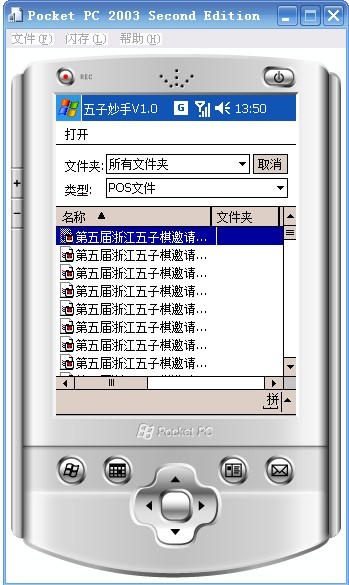
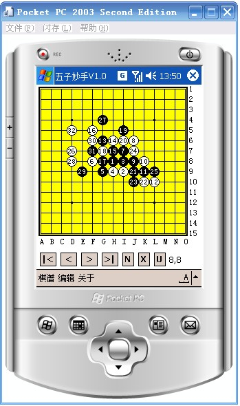

五子妙手五子棋互动棋谱软件 for PPC V1.0即将发布
#1 五子妙手五子棋互动棋谱软件 for PPC V1.0即将发布 作者：小丸.net 发表时间：2007-12-15 13:56:35
软件名称：五子妙手五子棋互动棋谱软件 for PPC
软件版本：V1.0预览版
软件作者：康 岩
软件美工：小丸
软件类型：免费软件
主要功能：五子妙手 for PPC 是在ppc下使用的五子棋互动棋谱软件，可以直接读取各游戏中心的五子棋谱，且能快捷的转换成网络互动谱，导出图片。
V1.0预览版功能简介：
1.具有打谱，修改棋谱的功能
2.具有打开，保存POS棋谱功能，与普通pc生成的pos文件完全兼容，以方便数据交换。


#2 Re:五子妙手五子棋互动棋谱软件 for PPC V1.0即将发布 作者：行云流水 发表时间：2007-12-17 10:10:27
哦.期待中!#3 Re:五子妙手五子棋互动棋谱软件 for PPC V1.0即将发布 作者：gerbo 发表时间：2007-12-23 10:09:49
 不为别的，这款软件界面太美了，光这点就太有吸引力了～！
不为别的，这款软件界面太美了，光这点就太有吸引力了～！
#4 Re:五子妙手五子棋互动棋谱软件 for PPC V1.0即将发布 作者：极地剑客 发表时间：2009-3-31 1:20:51
手机上能使不~